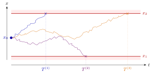
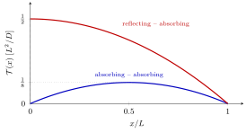
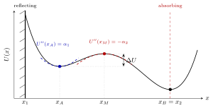
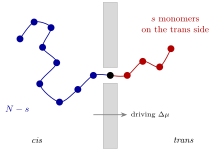
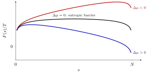

3 First exit times and activated escape
Chapter 2 closed with the backward Kolmogorov equation, which describes how the transition probability depends on the starting point of a process. This chapter puts it to work on the most natural “starting from \(x_0\), what happens?” question: how long does a diffusing particle take to leave a region? We define the survival probability and the distribution of the first exit time, show that the mean first exit time obeys a simple ordinary differential equation, and solve it exactly in one dimension for absorbing and reflecting boundaries. The general solution, evaluated for a high barrier, gives the Kramers–Arrhenius formula for the escape from a metastable state: the rate is exponentially small in the barrier height over the temperature. We close with a brief look at a biophysical application, the translocation of a polymer through a pore.
3.1 Survival probability and first exit time
Consider a one-dimensional, time-homogeneous diffusion process with drift \(a(x)\) and diffusion coefficient \(D\) (\(b^2 = 2D\)), started at \(x_0\) inside an interval \(I = [x_1,x_2]\) at time \(t_0 = 0\). The first exit time \(T_I(x_0)\) is the first time the trajectory reaches the boundary of \(I\). It is a random variable: each realisation of the noise gives a different value.

Figure: three realisations of a diffusion started at \(x_0\) inside \(I=[x_1,x_2]\) with absorbing walls. Each trajectory is removed when it first touches a wall; the times \(T^{(k)}\) are samples of the random first exit time \(T_I(x_0)\).
The probability of being still inside \(I\) at time \(t\), having started at \(x_0\), is \[\mathcal P_{x_0}(t) = \int_{x_1}^{x_2}dy\;W(x_0,0\,|\,y,t).\] It is the probability that the exit time has not occurred yet: \(\mathcal P_{x_0}(t) = \mathrm{Prob}\big[T_I(x_0) > t\big]\).
The identification of “being in \(I\) at time \(t\)” with “not having left \(I\) before \(t\)” holds only if a particle that leaves \(I\) cannot come back. This is true for the two boundary conditions we use (Chapter 2): an absorbing wall removes the particle for good, a reflecting wall does not let it leave at all. With natural (free) boundaries a trajectory could exit and re-enter, and the integral of \(W\) over \(I\) would overcount the survivors.
Since \(\mathcal P_{x_0}(t)\) is the cumulative probability of \(T_I > t\), the probability density of the exit time is \[\rho(t) = -\frac{\partial\mathcal P_{x_0}(t)}{\partial t}, \qquad \mathcal P_{x_0}(t) = \int_t^\infty d\tau\;\rho(\tau),\] with \(\mathcal P_{x_0}(0) = 1\) (the particle starts inside) and, if exit is certain, \(\mathcal P_{x_0}(\infty) = 0\). The mean first exit time follows by integrating by parts, assuming that \(\mathcal P_{x_0}(t)\) decays faster than \(1/t\): \[\boxed{\;\mathcal T(x_0) \equiv \langle T_I(x_0)\rangle = \int_0^\infty dt\;t\,\rho(t) = -\int_0^\infty dt\;t\,\frac{\partial\mathcal P_{x_0}}{\partial t} = \int_0^\infty dt\;\mathcal P_{x_0}(t).\;}\] The mean exit time is the area under the survival curve.
3.2 An equation for the mean exit time
We need an equation in the variable \(x_0\), which is where the backward Kolmogorov equation comes in. For a time-homogeneous process \(W(x_0,t_0|y,t)\) depends on \(t-t_0\) only, so \(\partial_{t_0}W = -\partial_tW\), and the backward equation of Chapter 2 with \(b^2 = 2D\) reads \[\frac{\partial W(x_0,0|y,t)}{\partial t} = a(x_0)\,\frac{\partial W(x_0,0|y,t)}{\partial x_0} + D\,\frac{\partial^2W(x_0,0|y,t)}{\partial x_0^2}.\] The derivatives act on \(x_0\), not on \(y\), so integrating over the final point \(y\in I\) commutes with them, and the survival probability obeys the same equation: \[\frac{\partial\mathcal P_{x_0}(t)}{\partial t} = a(x_0)\,\frac{\partial\mathcal P_{x_0}(t)}{\partial x_0} + D\,\frac{\partial^2\mathcal P_{x_0}(t)}{\partial x_0^2}.\] This is a clean, closed equation for a quantity of physical interest. The forward equation would not do this job: integrating it over \(y\) just gives the flux through the boundaries, with no closed equation in \(x_0\).
Now integrate over \(t\in[0,\infty)\). On the left, \(\int_0^\infty dt\,\partial_t\mathcal P_{x_0} = \mathcal P_{x_0}(\infty) - \mathcal P_{x_0}(0) = 0 - 1\); on the right, \(\int_0^\infty dt\,\mathcal P_{x_0}(t) = \mathcal T(x_0)\). Renaming \(x_0\to x\):
For a time-homogeneous diffusion with drift \(a(x)\) and diffusion coefficient \(D\), the mean first exit time from \(I\) starting at \(x\) satisfies \[\boxed{\;a(x)\,\frac{d\mathcal T(x)}{dx} + D\,\frac{d^2\mathcal T(x)}{dx^2} = -1\;}\] with boundary conditions - absorbing wall at \(x_i\): \(\mathcal T(x_i) = 0\) (a particle starting on the wall has already left); - reflecting wall at \(x_i\): \(\mathcal T'(x_i) = 0\) (no flux of probability through the wall).
In the language of Chapter 2, the equation reads \(\mathcal L^\dagger\mathcal T = -1\), with \(\mathcal L^\dagger = a\,\partial_x + D\,\partial_x^2\) the adjoint (backward) Fokker–Planck operator. The time-dependent problem has become a stationary boundary-value problem for an ordinary differential equation.
Remark (Why the boundary conditions). Absorbing: \(\mathcal P_{x}(t) = 0\) for \(x\) on the wall and every \(t>0\), hence \(\mathcal T = 0\) there. Reflecting: a particle at the wall is pushed back and is statistically indistinguishable from one just inside, so \(\partial_x\mathcal P_x(t) = 0\) at the wall for all \(t\); integrating in time gives \(\mathcal T' = 0\). (This is the backward counterpart of the zero-current condition \(J=0\) that a reflecting wall imposes on the forward equation.)
Remark (Higher moments). Multiplying the equation for \(\mathcal P_{x}(t)\) by \(n\,t^{n-1}\) and integrating, the moments \(\mathcal T_n(x) = \langle T_I^n\rangle = n\int_0^\infty dt\,t^{n-1}\mathcal P_x(t)\) obey the hierarchy \[a(x)\,\mathcal T_n' + D\,\mathcal T_n'' = -n\,\mathcal T_{n-1}, \qquad \mathcal T_0 = 1,\] with the same boundary conditions. Each moment is obtained from the previous one by solving the same linear problem with a new source. The variance of the exit time, for instance, follows from \(\mathcal T_1\) and \(\mathcal T_2\) (see the exercises).
3.3 General solution in one dimension
The equation is linear, first order in \(\mathcal T'\). Introduce the integrating factor \[\psi(x) = \exp\!\left[\frac1D\int^x dy\;a(y)\right], \qquad \psi'(x) = \frac{a(x)}{D}\,\psi(x).\] Multiplying the equation by \(\psi/D\), the left-hand side becomes an exact derivative: \[\frac{d}{dx}\Big(\psi(x)\,\mathcal T'(x)\Big) = -\frac{\psi(x)}{D}.\] Integrating once, \[\mathcal T'(x) = -\frac{1}{D\,\psi(x)}\int^x dz\;\psi(z) + \frac{C_1}{\psi(x)},\] and once more, \[\mathcal T(x) = C_1\int^x\frac{dy}{\psi(y)} - \frac1D\int^x\frac{dy}{\psi(y)}\int^y dz\;\psi(z) + C_2 .\] The two constants (and the free lower limits) are fixed by the boundary conditions.
Remark (Meaning of the integrating factor). For a conservative force, \(a(x) = -U'(x)/\tilde\gamma\), and with the Einstein relation \(\tilde\gamma D = T\), \[\psi(x) = e^{-U(x)/(\tilde\gamma D)} = e^{-U(x)/T},\] the Boltzmann factor: \(\psi\) is (up to normalisation) the equilibrium distribution \(p^*(x)\) of Chapter 2. Its inverse \(1/\psi = e^{U/T}\) is large where the potential is high. The exit-time formulas below are therefore combinations of integrals of \(e^{-U/T}\) (where the particle likes to stay) and \(e^{+U/T}\) (where it is unlikely to pass).
3.3.1 Absorbing walls at both ends
Take \(\mathcal T(x_1) = \mathcal T(x_2) = 0\). Choosing \(x_1\) as lower limit of all integrals makes \(\mathcal T(x_1) = C_2 = 0\) automatically (the lower limit of the inner integral \(\int^y dz\) only shifts \(C_1\), so we choose it equal to \(x_1\) as well). Then \(\mathcal T(x_2) = 0\) fixes \(C_1\), and the result can be written compactly with \[\Phi(y) = \int_{x_1}^y dz\;\psi(z), \qquad G(x) = \int_{x_1}^x\frac{dy}{\psi(y)}, \qquad H(x) = \int_{x_1}^x dy\;\frac{\Phi(y)}{\psi(y)} .\]
\[\mathcal T(x) = \frac1D\;\frac{G(x)\,H(x_2) - G(x_2)\,H(x)}{G(x_2)}, \qquad x_1\leq x\leq x_2 .\]
(In Livi–Politi’s notation the numerator is \(A(x;x_1,x_2) - B(x;x_1,x_2)\) and the denominator \(\int_{x_1}^{x_2}dy/\psi(y)\), Eqs. (1.235)–(1.237).)
With \(a = 0\): \(\psi = 1\), \(\Phi(y) = y - x_1\), \(G(x) = x-x_1\), \(H(x) = (x-x_1)^2/2\). Setting \(L = x_2-x_1\), \[\mathcal T(x) = \frac1D\,\frac{(x-x_1)L^2/2 - L\,(x-x_1)^2/2}{L} = \frac{(x-x_1)(x_2-x)}{2D}.\] One can also check it directly: \(D\mathcal T'' = -1\) with zero values at the ends gives the parabola. This is the result found in Chapter 2 with sources and sinks. Remarks:
- the longest mean exit time is from the centre, \(\mathcal T(x_1+L/2) = L^2/(8D)\);
- averaged over a uniform starting point, \(\overline{\mathcal T} = \frac1L\int_{x_1}^{x_2}\mathcal T = L^2/(12D)\);
- in all cases \(\mathcal T\propto L^2/D\): the time needed to diffuse across the interval. Doubling the size quadruples the time.
3.3.2 A reflecting and an absorbing wall
Now let \(x_1\) be reflecting, \(\mathcal T'(x_1) = 0\), and \(x_2\) absorbing, \(\mathcal T(x_2) = 0\). In the first integration, taking the lower limit at \(x_1\) and \(C_1 = 0\) gives \(\mathcal T'(x_1) = 0\): \[\mathcal T'(x) = -\frac{1}{D\,\psi(x)}\int_{x_1}^x dz\;\psi(z).\] Integrating from \(x\) to \(x_2\) with \(\mathcal T(x_2) = 0\):
\[\boxed{\;\mathcal T(x) = \frac1D\int_x^{x_2}\frac{dy}{\psi(y)}\int_{x_1}^{y}dz\;\psi(z)\;}\] and for a conservative force (\(\psi = e^{-U/T}\)) \[\mathcal T(x) = \frac1D\int_x^{x_2}dy\;e^{U(y)/T}\int_{x_1}^{y}dz\;e^{-U(z)/T}.\] This is exact, for any potential. The reflecting wall can be sent to \(x_1\to-\infty\) if \(U\) grows fast enough there.
With \(a = 0\) on \([0,L]\), reflecting at \(0\) and absorbing at \(L\): \[\mathcal T(x) = \frac1D\int_x^L dy\;y = \frac{L^2 - x^2}{2D}.\] Starting at the reflecting wall, \(\mathcal T(0) = L^2/(2D)\), four times the longest time with two absorbing walls at distance \(L\). There is a neat way to see it: by symmetry a reflecting wall at \(0\) is equivalent to an absorbing wall at \(-L\) (method of images), and indeed \(\frac{(x+L)(L-x)}{2D}\) is the two-absorbing-walls result on \([-L,L]\).

Figure: mean exit time of free diffusion from \([0,L]\) as a function of the starting point. Blue: both walls absorbing. Red: reflecting at \(0\), absorbing at \(L\); the curve has zero slope at the reflecting wall.
3.4 Escape from a metastable state: the Arrhenius formula
The formula with a reflecting and an absorbing wall has an application of great physical relevance: the escape of a particle from a metastable potential well, driven only by thermal fluctuations.

Figure: an asymmetric double-well potential. A particle starts in the metastable well around \(x_A\) and must cross the barrier at \(x_M\) to reach the deeper minimum \(x_B\). The wall at \(x_1\) is reflecting (\(x_1\) may be sent to \(-\infty\)), the line at \(x_B\) absorbing. Dashed: the harmonic approximations used in the saddle-point evaluation.
The question. An overdamped particle moves in an asymmetric double-well potential \(U(x)\) (figure above): drift \(a(x) = -U'(x)/\tilde\gamma\) and constant diffusion coefficient \(D = T/\tilde\gamma\). It starts near the metastable minimum \(x_A\). What is the mean time it needs to cross the barrier at \(x_M\) and reach the deeper minimum \(x_B\)?
We compute the mean exit time from \(I = [x_1,x_B]\) with a reflecting wall at \(x_1\) and an absorbing one at \(x_B\). Making \(x_B\) absorbing means that, on the time scale of the escape, the particle never comes back. This is physically sensible if \(U(x_B) < U(x_A)\), because the way back crosses a higher barrier and takes exponentially longer. The exact answer is the boxed formula of the previous section: \[\mathcal T(x) = \frac1D\int_x^{x_B}dy\;e^{U(y)/T}\int_{x_1}^{y}dz\;e^{-U(z)/T}.\]
3.4.1 Saddle-point evaluation for a high barrier
Assume \(\Delta U = U(x_M) - U(x_A)\gg T\).
- The outer integrand \(e^{U(y)/T}\) is sharply peaked at the barrier top \(y = x_M\).
- The inner integral \(\int_{x_1}^y e^{-U/T}\) grows with \(y\) only while \(y\) crosses the well around \(x_A\), where \(e^{-U/T}\) is largest; near \(y\approx x_M\) it has already saturated.
So we can freeze the inner integral at \(y = x_M\) and factorise: \[\mathcal T(x) \simeq \frac1D\left[\int_{x_1}^{x_M}dz\;e^{-U(z)/T}\right]\left[\int_x^{x_B}dy\;e^{U(y)/T}\right].\] Expand each integrand around its dominant point: \[U(z)\simeq U(x_A) + \tfrac12\alpha_1(z-x_A)^2,\quad \alpha_1 = U''(x_A)>0; \qquad U(y)\simeq U(x_M) - \tfrac12\alpha_2(y-x_M)^2,\quad \alpha_2 = -U''(x_M)>0 .\] The resulting Gaussians have widths \(\sqrt{T/\alpha_{1,2}}\), small compared with the distances between \(x_1\), \(x_A\), \(x_M\), \(x_B\) when \(T\ll\Delta U\). We can therefore extend both integrals to \((-\infty,\infty)\) with an exponentially small error, provided the starting point \(x\) lies to the left of the barrier region: \[\int_{x_1}^{x_M}dz\;e^{-U(z)/T}\simeq\sqrt{\frac{2\pi T}{\alpha_1}}\;e^{-U(x_A)/T},\qquad \int_{x}^{x_B}dy\;e^{U(y)/T}\simeq\sqrt{\frac{2\pi T}{\alpha_2}}\;e^{U(x_M)/T}.\]
For \(\Delta U = U(x_M) - U(x_A)\gg T\), the mean escape time from the metastable well is \[\mathcal T \simeq \frac{2\pi T}{D\sqrt{\alpha_1\alpha_2}}\;e^{\Delta U/T} = \frac{2\pi\tilde\gamma}{\sqrt{\alpha_1\alpha_2}}\;e^{\Delta U/T},\] and the escape rate is \[\boxed{\;k = \frac1{\mathcal T} \simeq \frac{\sqrt{\alpha_1\alpha_2}}{2\pi\tilde\gamma}\;e^{-\Delta U/T}\;}\]
This is the Arrhenius law: the rate of a process that must overcome an energy barrier \(E\) behaves as \[k \propto e^{-E/T}.\] Arrhenius proposed it on heuristic grounds for the rates of chemical reactions, with \(E\) the activation energy. Here it is derived from the Fokker–Planck description, prefactor included.
3.4.2 Reading the result
- Independent of the starting point. \(\mathcal T\) does not depend on \(x\), as long as \(x\) is in the basin of \(x_A\). The particle relaxes inside the well in a time \(\sim\tilde\gamma/\alpha_1\), exponentially shorter than \(\mathcal T\), and forgets where it started. The escape is a rare event from a locally equilibrated well, which is why it is described by a single rate.
- Only the barrier matters exponentially. The exponent involves only \(\Delta U/T\), i.e. the Boltzmann ratio \(p^*(x_M)/p^*(x_A)\); the depth of the final well \(U(x_B)\) does not enter. Raising the barrier by a few \(T\) changes the time by orders of magnitude, and \(\ln k\) against \(1/T\) is a straight line of slope \(-\Delta U\) (the Arrhenius plot).
- The prefactor is set by the curvatures. \(\alpha_1/\tilde\gamma\) is the relaxation rate at the bottom of the well, and \(\alpha_2/\tilde\gamma\) the rate at which the unstable barrier top repels the particle; their geometric mean over \(2\pi\) is the “attempt frequency”. In the overdamped limit it does not depend on \(T\).
- Validity. We need \(\Delta U\gg T\), smooth wells (harmonic approximations good over a width \(\sqrt{T/\alpha}\)), and overdamped dynamics. Kramers’ full treatment with inertia changes the prefactor but not the exponential.
Remark (Flux over population). The same result follows from a quasi-stationary argument. Imagine re-injecting at \(x_A\) every particle absorbed at \(x_B\): a stationary state forms with a small constant current \(J\) over the barrier and a well population \(n_A\) that is almost Boltzmann-distributed. The rate is \(k = J/n_A\). Solving \(J = -D\,e^{-U/T}\,\partial_x\big(e^{U/T}p\big)\) for \(p\) with \(p(x_B) = 0\) gives \(J\int_{x_A}^{x_B}e^{U/T}\simeq D\,e^{U(x_A)/T}p(x_A)\). With \(n_A\simeq p(x_A)\,e^{U(x_A)/T}\int e^{-U/T}\) over the well, the same two Gaussian integrals appear and one recovers \(k = \sqrt{\alpha_1\alpha_2}\,e^{-\Delta U/T}/(2\pi\tilde\gamma)\).
3.5 Polymer translocation
A short application of the mean-exit-time machinery to a problem of biophysics. Translocation is the passage of a long polymer (DNA, RNA, a protein) through a narrow pore in a membrane, from the cis to the trans side. It happens when viruses inject their genome into a cell, when proteins are imported into organelles, and in nanopore sequencing, where single DNA strands are pulled through a protein or solid-state pore by an electric field and read as they pass. The pore is so narrow that monomers cross it one at a time, which makes a one-dimensional description natural.

Figure: a polymer of \(N\) monomers threading a pore. The configuration is coarse-grained to a single reaction coordinate, the number \(s\) of monomers that have crossed. A chemical-potential difference \(\Delta\mu\) per monomer (an electric field acting on a charged chain, a binding protein on the trans side) can bias the motion.
3.5.1 The model
Following Sung and Park, describe the process by a single coordinate \(s\in[0,N]\), the number of monomers already on the trans side, treated as continuous for \(N\gg1\). Monomers hop back and forth through the pore, so \(s\) performs an overdamped diffusion with coefficient \(D\) in a free-energy landscape \(F(s)\): \[a(s) = -\frac{D}{T}\,F'(s), \qquad \psi(s) = e^{-F(s)/T}.\] Two contributions enter \(F\):
- a driving term \(-s\,\Delta\mu\), if each monomer has a chemical potential lower by \(\Delta\mu\) on the trans side;
- an entropic term: a chain end-tethered to a wall loses conformational entropy, and the two halves of a threaded chain each pay a cost \(\propto\ln(\text{length})\), \[\frac{F(s)}{T} = -\frac{s\,\Delta\mu}{T} + (1-\gamma_1)\big[\ln s + \ln(N-s)\big],\] with \(\gamma_1\) a universal exponent (\(\gamma_1 = 1/2\) for an ideal chain, \(\approx0.69\) for a self-avoiding chain in three dimensions).

Figure: free energy of a threaded chain (\(N=100\), \(\gamma_1\approx0.69\)). Without driving, the entropic cost of having two tails produces a barrier of order \(\ln N\) in the middle. A favourable \(\Delta\mu\) tilts the landscape downhill towards the trans side; an unfavourable one makes translocation an activated process.
The translocation time is the time to go from \(s=0\) (one monomer threaded) to \(s=N\). The chain cannot retract further than \(s=0\) in this description (in an experiment, an unthreading event simply restarts the clock), so we place a reflecting wall at \(0\) and an absorbing wall at \(N\), and use the formula of the previous sections: \[\tau = \mathcal T(0) = \frac1D\int_0^N ds\;e^{F(s)/T}\int_0^s ds'\;e^{-F(s')/T}.\]
3.5.2 Average translocation time with a constant driving
The entropic term only matters logarithmically; neglect it and keep the driving, i.e. a constant drift \(v = D\,\Delta\mu/T\). Then \(\psi(s) = e^{vs/D}\) and \[\tau = \frac1D\int_0^N ds\;e^{-vs/D}\int_0^s ds'\,e^{vs'/D} = \frac1v\int_0^N ds\,\big(1 - e^{-vs/D}\big),\] that is \[\boxed{\;\tau = \frac Nv - \frac D{v^2}\Big(1 - e^{-vN/D}\Big)\;}\] The behaviour is controlled by the Péclet number \(\mathrm{Pe} = vN/D = N\Delta\mu/T\), the ratio of the total free-energy drop to the thermal energy.
- Unbiased translocation, \(\mathrm{Pe}\to0\). Expanding \(1 - e^{-u} = u - u^2/2 + \dots\), the \(N/v\) terms cancel and \[\tau \simeq \frac{N^2}{2D},\] the reflecting–absorbing result for free diffusion: the chain crosses by diffusion and \(\tau\propto N^2\).
- Driven translocation, \(\mathrm{Pe}\gg1\). The exponential is negligible and \[\tau \simeq \frac Nv = \frac{N\,T}{D\,\Delta\mu}:\] the monomers are pushed through at constant velocity and \(\tau\propto N/\Delta\mu\).
- Unfavourable driving, \(\Delta\mu<0\). Now \(v<0\) and the dominant term is \(\tau\simeq\frac{D}{v^2}\,e^{N|\Delta\mu|/T}\): translocation is an activated process over a barrier \(N|\Delta\mu|\) that grows with the length of the chain, and long chains essentially never cross.
The crossover between the diffusive and driven regimes is at \(N\Delta\mu\sim T\): since the drive acts on every monomer, even a very small bias per monomer dominates for long chains.
Remark (What this simple picture leaves out).
- If the whole chain must be dragged through the solvent to advance \(s\), the effective diffusion coefficient itself decreases with length, \(D\sim D_0/N\) (Rouse friction). The scaling becomes \(\tau\sim N^3\) unbiased and \(\tau\sim N^2\) driven.
- The entropic barrier of height \((1-\gamma_1)\ln N\) slows down unbiased translocation only by a power-law factor, not exponentially: it is a weak barrier.
- In reality the chain conformations on the two sides do not equilibrate on the time scale of a single monomer hop, so the dynamics of \(s\) is not exactly Markovian. Simulations show anomalous scaling exponents; the one-coordinate Fokker–Planck model is the first, mean-field, approximation.
3.6 Summary
- The survival probability \(\mathcal P_{x_0}(t) = \int_IW(x_0,0|y,t)\,dy\) is the probability that the first exit time exceeds \(t\) (valid for absorbing or reflecting walls, where re-entry is impossible). Its time derivative is minus the exit-time density, and its time integral is the mean exit time.
- Integrating the backward Kolmogorov equation over the final point and over time gives an ODE in the starting point: \(a\,\mathcal T' + D\,\mathcal T'' = -1\), with \(\mathcal T = 0\) at absorbing walls and \(\mathcal T' = 0\) at reflecting ones. Higher moments obey the same equation with source \(-n\mathcal T_{n-1}\).
- In one dimension the equation is solved exactly with the integrating factor \(\psi = e^{\int a/D}\), which for a conservative force is the Boltzmann factor \(e^{-U/T}\). For free diffusion \(\mathcal T\sim L^2/D\).
- For a reflecting and an absorbing wall, \(\mathcal T(x) = \frac1D\int_x^{x_2}dy\,e^{U(y)/T}\int_{x_1}^ydz\,e^{-U(z)/T}\). For a high barrier a saddle-point evaluation gives the Kramers–Arrhenius rate \(k\simeq\frac{\sqrt{\alpha_1\alpha_2}}{2\pi\tilde\gamma}\,e^{-\Delta U/T}\), independent of the starting point and exponentially sensitive to \(\Delta U/T\).
- Polymer translocation through a pore maps onto the first passage of the number of translocated monomers from \(0\) to \(N\). With a constant drive, \(\tau = N/v - (D/v^2)(1-e^{-vN/D})\): diffusive (\(\tau\propto N^2\)) without drive, ballistic (\(\tau\propto N\)) with a favourable drive, activated with an unfavourable one.
3.7 Exercises
(Exit time with a constant drift) A particle with constant drift \(v>0\) and diffusion coefficient \(D\) starts at \(x\in[0,L]\), with absorbing walls at \(0\) and \(L\). Show that \[\mathcal T(x) = \frac{L\,\pi(x) - x}{v}, \qquad \pi(x) = \frac{1-e^{-vx/D}}{1-e^{-vL/D}},\] where \(\pi(x)\) is the splitting probability of Chapter 2 (probability to exit through \(L\)). Check the limit \(v\to0\).
Solution. \(\pi\) solves \(v\pi' + D\pi'' = 0\), so \(v\mathcal T' + D\mathcal T'' = \frac1v\big[L(v\pi' + D\pi'') - v\big] = -1\). Boundary values: \(\mathcal T(0) = (L\cdot0 - 0)/v = 0\) and \(\mathcal T(L) = (L - L)/v = 0\). For \(v\to0\), expand with \(\epsilon = v/D\): \(\pi(x) = \frac{x}{L}\Big[1 - \frac{\epsilon(x-L)}{2} + O(\epsilon^2)\Big]\), hence \(L\pi(x) - x = \frac{\epsilon\,x(L-x)}{2} + O(\epsilon^2)\) and \(\mathcal T\to\frac{x(L-x)}{2D}\), the free-diffusion parabola.
(Fluctuations of the exit time) For free diffusion on \([0,L]\), reflecting at \(0\) and absorbing at \(L\), compute the second moment \(\mathcal T_2(x)\) from \(D\mathcal T_2'' = -2\mathcal T_1\). Starting at \(x = 0\), find the relative fluctuation \(\sqrt{\langle T^2\rangle - \langle T\rangle^2}/\langle T\rangle\). Is the mean exit time a good description of a single event?
Solution. With \(\mathcal T_1 = (L^2 - x^2)/(2D)\): \(\mathcal T_2'' = -(L^2-x^2)/D^2\). Imposing \(\mathcal T_2'(0) = 0\) gives \(\mathcal T_2' = -(L^2x - x^3/3)/D^2\), and \(\mathcal T_2(L) = 0\) gives \(\mathcal T_2(x) = \frac{1}{D^2}\Big[\frac{5L^4}{12} - \frac{L^2x^2}{2} + \frac{x^4}{12}\Big]\). At \(x = 0\): \(\langle T^2\rangle = \frac{5L^4}{12D^2}\), \(\langle T\rangle^2 = \frac{L^4}{4D^2}\), so the variance is \(\frac{L^4}{6D^2}\) and the relative fluctuation is \(\sqrt{1/6}/(1/2) = 2/\sqrt6\approx0.82\). The exit time fluctuates by an amount comparable to its mean: single events are broadly distributed, and the mean is only a rough indicator. (For a high barrier, instead, the exit-time distribution becomes exponential, with standard deviation equal to the mean.)
(Kramers rate for a cubic potential) A particle in the potential \(U(x) = \Delta U\,\big[3(x/\ell)^2 - 2(x/\ell)^3\big]\) starts near \(x = 0\). Find the minimum and the barrier, the curvatures \(\alpha_1\), \(\alpha_2\), and the Kramers escape rate for \(\Delta U\gg T\).
Solution. \(U'(x) = \frac{6\Delta U}{\ell^2}\,x\,(1 - x/\ell)\): minimum at \(x_A = 0\) with \(U = 0\), maximum at \(x_M = \ell\) with \(U = \Delta U\), so the barrier is \(\Delta U\). \(U''(x) = \frac{6\Delta U}{\ell^2}(1 - 2x/\ell)\) gives \(\alpha_1 = U''(0) = 6\Delta U/\ell^2\) and \(\alpha_2 = -U''(\ell) = 6\Delta U/\ell^2\). Then \[k \simeq \frac{\sqrt{\alpha_1\alpha_2}}{2\pi\tilde\gamma}\,e^{-\Delta U/T} = \frac{3\,\Delta U}{\pi\,\tilde\gamma\,\ell^2}\;e^{-\Delta U/T}.\] Beyond \(x = \ell\) the potential decreases without bound, so a particle that crosses the barrier does not come back: the absorbing condition is natural.
(Activation energy from an Arrhenius plot) The rate of a reaction doubles when the temperature goes from \(300\,\mathrm K\) to \(310\,\mathrm K\). Assuming an Arrhenius law with a temperature-independent prefactor, estimate the activation energy in eV and in kJ/mol.
Solution. \(\ln\frac{k(310)}{k(300)} = \frac{E}{k_B}\Big(\frac1{300} - \frac1{310}\Big)\), so \(\frac{E}{k_B} = \frac{\ln2}{1.075\times10^{-4}\,\mathrm K^{-1}}\approx6.4\times10^3\,\mathrm K\). Hence \(E\approx6.4\times10^3\times8.62\times10^{-5}\,\mathrm{eV}\approx0.56\,\mathrm{eV}\), i.e. \(E\approx6.4\times10^3\times8.314\,\mathrm{J/mol}\approx54\,\mathrm{kJ/mol}\), about \(22\,k_BT\) at room temperature: the “rate doubles every ten degrees” rule of thumb corresponds to typical chemical barriers of a few tenths of an eV.
(Translocation against the drive) In the translocation model with constant drift, let \(\Delta\mu<0\) (\(v = -|v|\)). Show that for \(N|\Delta\mu|\gg T\) \[\tau\simeq\frac{D}{v^2}\,e^{N|\Delta\mu|/T}.\] Why does the prefactor differ from the Kramers form \(2\pi\tilde\gamma/\sqrt{\alpha_1\alpha_2}\)?
Solution. With \(u = |v|N/D = N|\Delta\mu|/T\), the exact result becomes \(\tau = -\frac{N}{|v|} + \frac{D}{v^2}\big(e^{u} - 1\big)\simeq\frac{D}{v^2}e^{u}\) for \(u\gg1\). The barrier is still \(e^{\Delta F/T}\) with \(\Delta F = N|\Delta\mu|\), but the landscape is linear: the minimum is at the reflecting wall \(s = 0\) and the maximum at the absorbing wall \(s = N\), both at the boundaries, with zero curvature. The integrals \(\int e^{\mp F/T}\) are dominated by exponential (not Gaussian) tails of width \(D/|v| = T/|\Delta\mu|\), which replace the widths \(\sqrt{2\pi T/\alpha_{1,2}}\) of the Kramers calculation.
3.8 Sources
Lecture 3 of the course: computation of the average first exit time with an exact formula from the backward Kolmogorov equation; the Arrhenius formula as an approximation for the mean exit time from a metastable state in a double-well potential; brief mention of the polymer translocation problem and of the average translocation time. Book: R. Livi and P. Politi, Nonequilibrium Statistical Physics: A Modern Perspective, Cambridge (2017), §1.6.4, subsection “First Exit Time and the Arrhenius Formula”, Eqs. (1.222)–(1.247). The higher moments, the method of images and the flux-over-population argument are standard complements, see P. Hänggi, P. Talkner and M. Borkovec, “Reaction-rate theory: fifty years after Kramers”, Rev. Mod. Phys. 62, 251 (1990), and H. A. Kramers, Physica 7, 284 (1940). The translocation model follows W. Sung and P. J. Park, “Polymer translocation through a pore in a membrane”, Phys. Rev. Lett. 77, 783 (1996), and M. Muthukumar, “Polymer translocation through a hole”, J. Chem. Phys. 111, 10371 (1999); the lecture only sketched it, and the details here (free energy, regimes) are added from these papers.